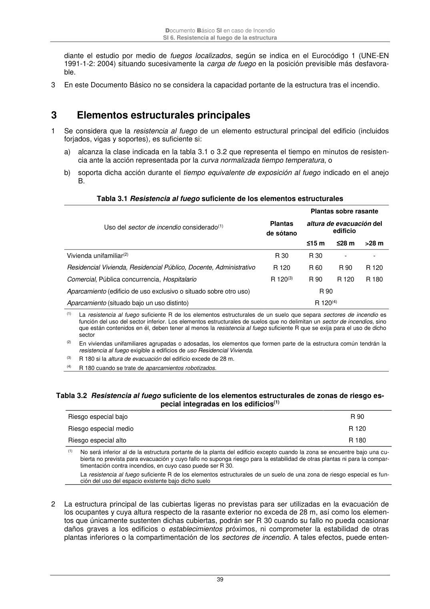

DB-SI · 2 Resistencia al fuego de la estructura · versión 2025-03-04 · capa oficial
Formatos: JSON compacto · Markdown · PDF fuente
Ámbito del documento · texto del ámbito · documento y tablas
ID técnico a0082 · PDF pág. 38-39 · jerarquía no validada por persona · contrastado con el literal de la página 38 (marcador PDF); no validado por persona · padre: a0080
Resistenciaal fuego de la estructura 1 Se admite que un elemento tiene suficiente resistencia al fuego si, durante la duración del incendio, el valor de cálculo del efecto de las acciones, en todo instante t, no supera el valor de la resistencia de dicho elemento. En general, basta con hacer la comprobación en el instante de mayor temperatu- ra que, con el modelo de curva normalizada tiempo-temperatura, se produce al final del mismo. 2 En el caso de sectores de riesgo mínimo y en aquellos sectores de incendio en los que, por su tama- ño y por la distribución de la carga de fuego, no sea previsible la existencia de fuegos totalmente desarrollados, la comprobación de la resistencia al fuego puede hacerse elemento a elemento me- Documento Básico SI en caso de Incendio SI 6. Resistencia al fuego de la estructura 39 diante el estudio por medio de fuegos localizados, según se indica en el Eurocódigo 1 (UNE-EN 1991-1-2: 2004) situando sucesivamente la carga de fuego en la posición previsible más desfavora- ble. 3 En este Documento Básico no se considera la capacidad portante de la estructura tras el incendio. 3

PDF fuente redistribuible: copia fiel enlazada en esta página (SHA256 verificado).